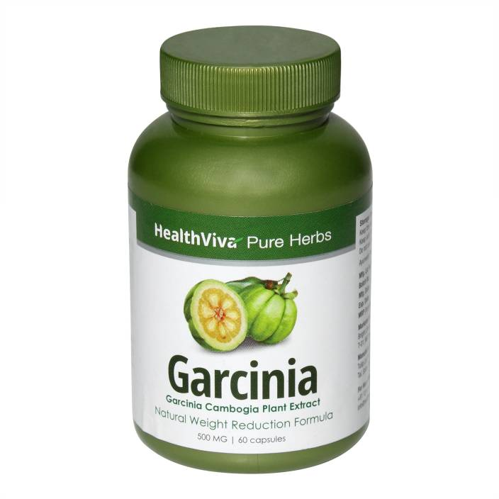
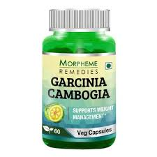
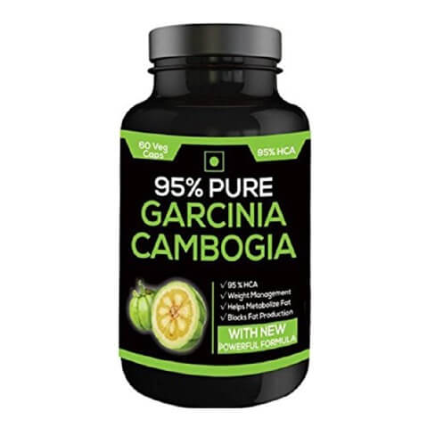
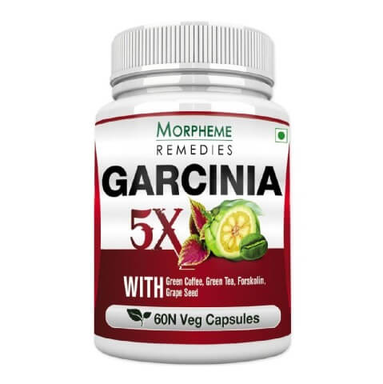

YOU’RE NOT 12 anymore. You know that a hot dog or two is fine every now and then, and that you can’t make them, or any other processed meats, a regular part of your daily diet. And you're probably also aware that daily consumption of whole grains—like oatmeal, wild and brown rice, wheat, and barley—can drop risk factors for developing a bunch of nasty conditions like heart disease, stroke, and diabetes.But if you don't already believe it, here's another reason to buy in. Those two food categories—processed meats and whole grains—are closely tied to risk of colorectal cancer, or cancer of the colon or rectum, according to a recent report from the American Institute for Cancer Research that analyzed 99 studies and health stats on more than 29 million people. Foods like hot dogs and bacon significantly upped the risk, while eating three servings, or about 90g, of whole grains each day can drop the chance by 17%.
   